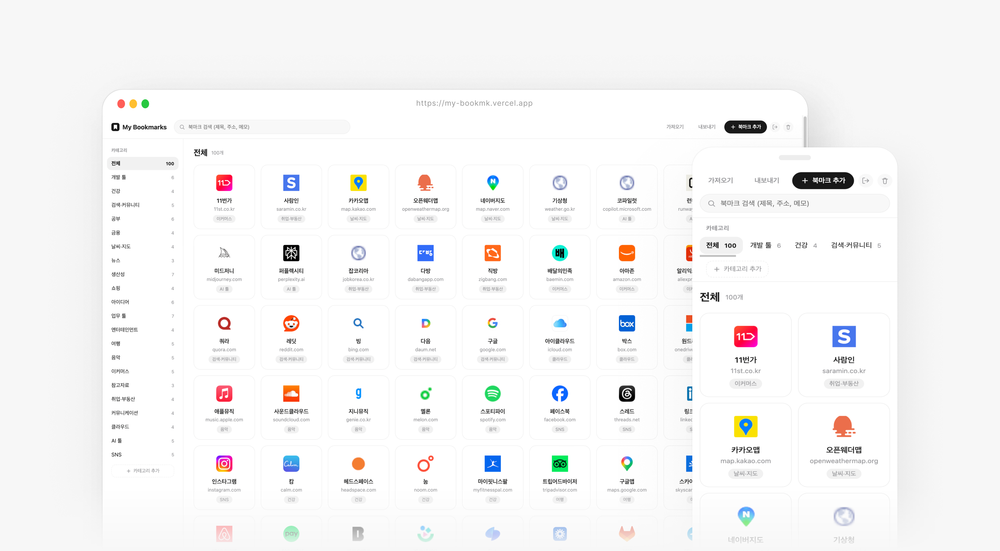
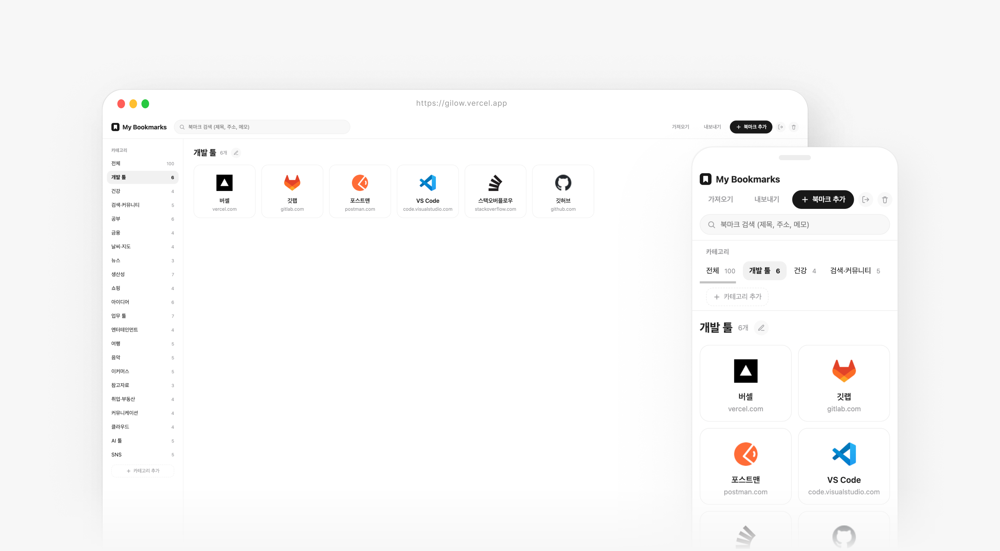
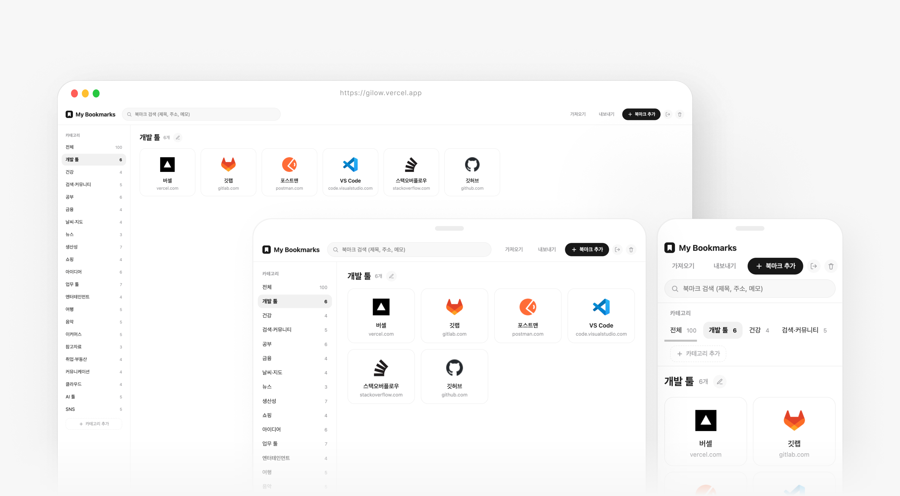
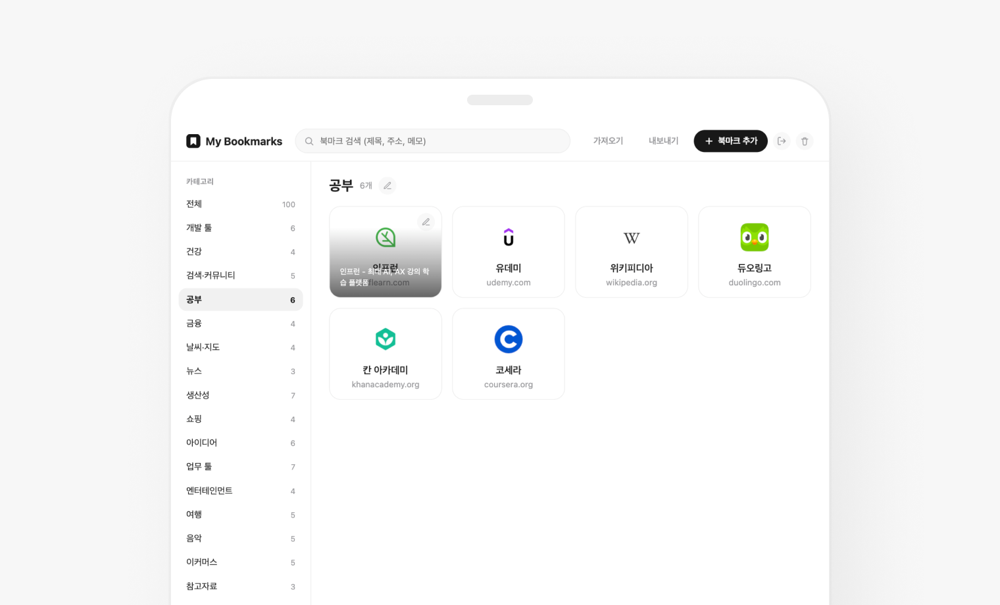
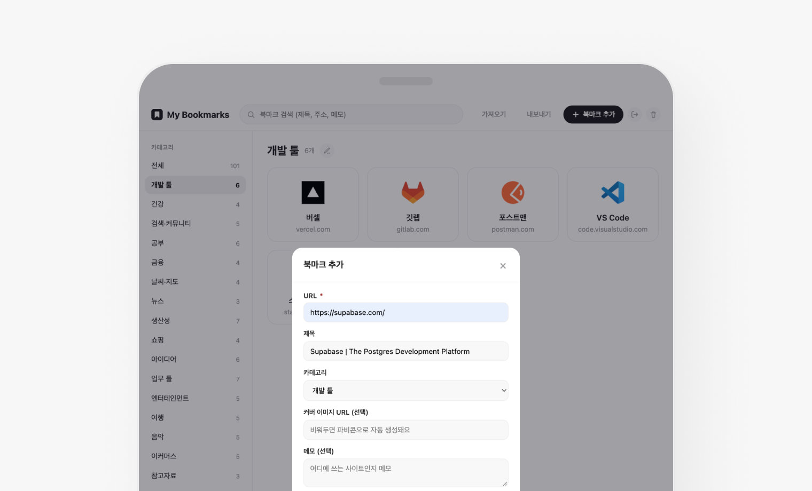
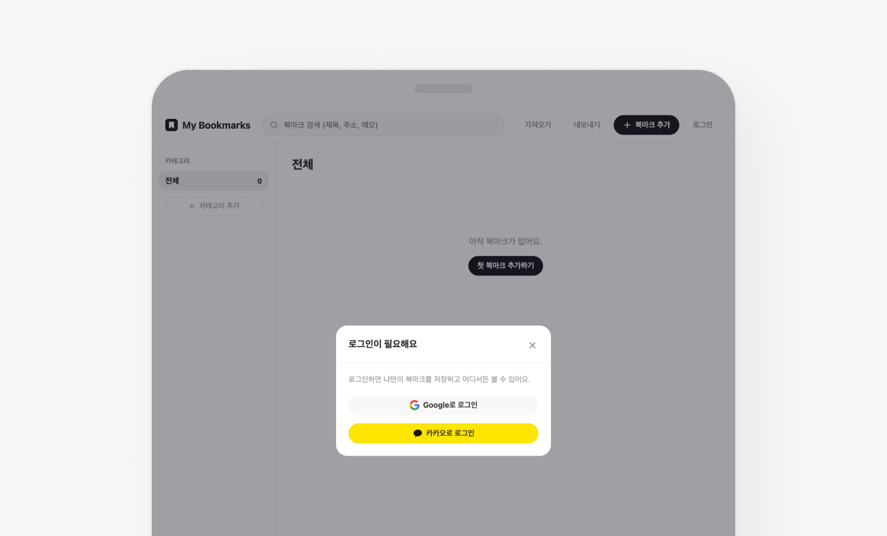
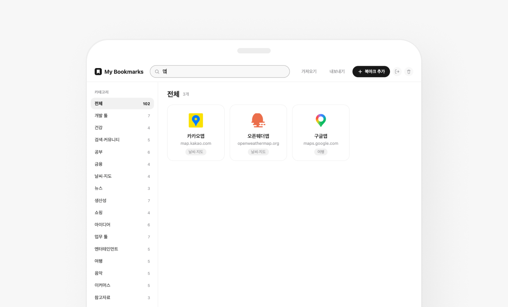
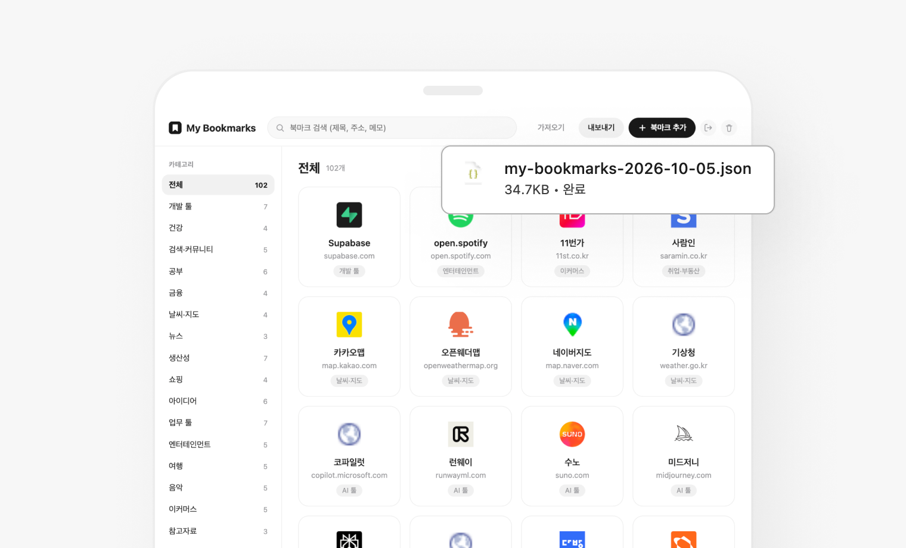
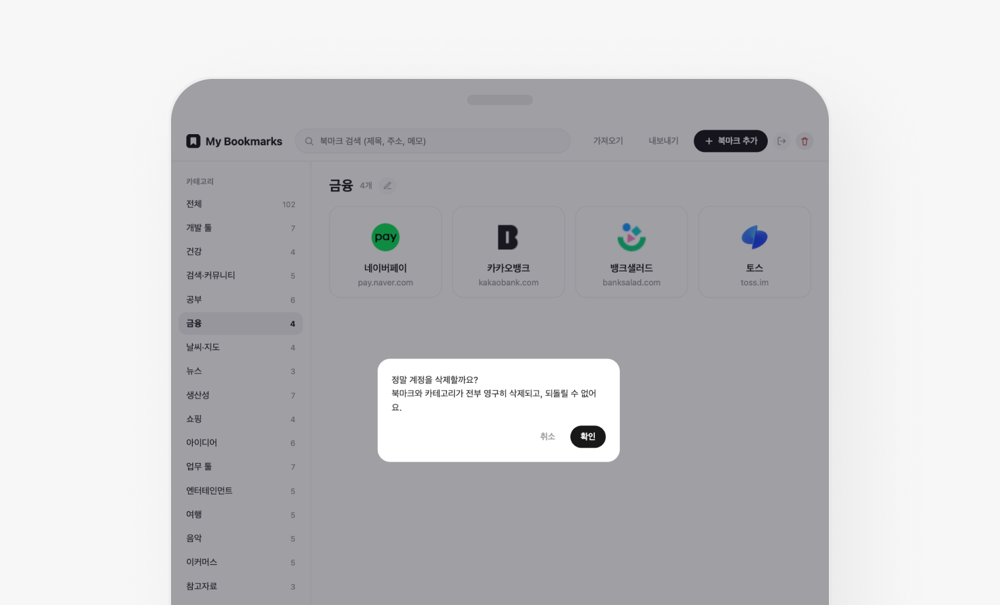

마이 북마크 ‘My Bookmarks’
사이트 바로 가기 ↗흩어진 북마크를 카테고리별로 정리하고, 드래그 한 번으로 순서를 바꾸는 개인 북마크 매니저
이미지 썸네일 그리드로 한눈에 훑어보고, 로그인 한 번으로 어떤 기기에서든 같은 북마크를 보는 구조
카테고리 관리, 검색, 드래그 정렬, 가져오기/내보내기까지 한 화면에서 해결
북마크를 브라우저에 쌓아 두기만 하고 다시 찾기 어려워서 불편했고, 그래서 직접 만들었습니다.

현안 → 전략
현안
전략
01
북마크 정리의 번거로움
브라우저 기본 북마크는 폴더가 깊어져
원하는 사이트를 다시 찾기 어려움
카테고리 + 썸네일 그리드
아이콘 중심 카드로 한눈에 훑고
카테고리로 나눠 탐색
02
기기마다 따로 있는 북마크
PC와 휴대폰에 저장한 북마크가
서로 공유되지 않음
PC 저장 → 휴대폰에서 다시 찾기 → 결국 재등록
구글·카카오 로그인 기반 동기화
로그인 한 번으로 어느 기기에서든
같은 북마크를 실시간으로 확인
03
북마크에 맥락을 남길 수 없음
즐겨찾기에는 URL과 제목만 남아서
왜 저장했는지, 어디에 쓸지 기록할 곳이 없음
북마크마다 메모 기록
카드마다 메모를 남기고 검색 대상에 포함
나중에 메모 검색으로 맥락까지 다시 찾기
04
사용자 간 데이터 혼선
여러 사람이 써도
서로의 북마크가 섞이면 안 됨
사용자별 데이터 격리 (RLS)
모든 행을 로그인한 사용자 기준으로만 읽고 쓰도록
DB 정책에서 강제
퍼소나 & 여정
정보를 모으는 사람
링크는 많이 저장하지만 정작 다시 찾아보는 일은 드문 사용자, 디자이너·개발자·학생
그래서, 북마크는 이렇게 쌓입니다
북마크 추가
URL만 붙여넣기
→ 사이트 제목 자동 채움
카테고리 정리
카테고리 만들기
→ 카드를 Drag & Drop으로 정렬
검색
제목·주소·메모 어디서든
검색어 한 번으로 찾기
기기 간 동기화
구글·카카오 로그인
→ 다른 기기에서도 같은 목록
백업·이동
JSON으로 내보내기
→ 다른 계정에 가져오기
MVP 정의
검증하려는 가설 · “썸네일 그리드와 카테고리 정리만으로, 저장해 둔 북마크를 다시 찾는 시간이 줄어든다.”
MVP — 반드시 있어야 하는 것
1. 구글·카카오 로그인
2. 북마크 추가·수정·삭제
3. 카테고리 추가·수정·삭제
4. 썸네일 그리드 + 파비콘 자동 표시
5. 제목·주소·메모 검색
6. 드래그로 순서 변경
7. JSON 가져오기·내보내기
검증 기준 (목표)
· 북마크 추가가 URL 붙여넣기 한 번으로 끝난다
· 다른 기기에서 로그인하면 같은 목록이 바로 보인다
· 드래그 후 순서가 지연 없이 즉시 반영된다
· 사용자 간 데이터가 섞이지 않는다
· 기존 북마크에도 사이트 제목이 자동으로 채워진다
· 모바일에서도 그리드가 깨지지 않는다
MVP 이후 실제로 확장한 것
· 사이트 제목 자동 가져오기 (카드 호버 시 노출)
· 기존 북마크도 로그인 시 자동으로 제목 채우기
· 실시간 동기화 (Realtime)
· 계정 삭제 (본인 데이터 전부 영구 삭제)
· 가입자·방문자 통계 (관리자 전용)
· 방문 분석 (GA4)
· 파비콘·로고 적용
가설 → 검증 → 재설계
1
처음의 가설
“브라우저 북마크 대신 썸네일로 보이면 더 자주 열어보지 않을까?”
2
실제 구현
Supabase 인증·DB + Vercel 정적 배포
카드 그리드와 카테고리 구현
3
실제 사용
실제 북마크를 쌓으며
정렬과 검색 방식을 검증
4
문제 발견
드래그 후 서버 응답을 기다리느라
카드가 튕겨 보이는 지연 발생
5
재설계
화면 먼저 반영 → 서버 저장
실패 시에만 재조회하는 구조로 전환
데이터의 흐름
사용자 하나가 카테고리와 북마크를 소유하고, 모든 데이터는 사용자 기준으로만 조회됨
User
구글·카카오 계정
세션 토큰
→
Category
이름
소유자(user_id)
→
Bookmark
URL · 제목 · 메모
카테고리 · 정렬 순서
A · 북마크 추가 흐름
URL 입력
→
사이트 제목 자동 가져오기
→
Bookmark 저장
→
카드 생성
B · 순서 변경 흐름
카드 드래그
→
화면에 먼저 반영
→
서버에 저장
→
실패 시 재조회
C · 기기 동기화 흐름
로그인
→
사용자 데이터 조회
→
Realtime 구독
→
다른 기기에도 즉시 반영
Highlight 01 · Drag & Drop
카드를 끌어 놓으면 순서가 바로 바뀐다
순서 변경을 ‘입력’이 아니라 ‘배치’로 정의
카드를 끌어 놓는 즉시 화면이 바뀌고, 저장은 뒤에서 처리
자주 보는 사이트를 손이 가는 곳에 두도록 설계
Drag → Drop → Instant Save

Highlight 02 · Login & Sync
로그인하면 어느 기기에서든 같은 북마크
계정마다 독립된 데이터 공간
다른 기기에서 로그인해도 같은 카테고리와 순서 그대로
사용자 격리를 DB 정책으로 강제해 개인 북마크가 섞이지 않도록 설계
Google / Kakao Login → Realtime Sync

그 외 주요 화면

Grid
썸네일 카드로 한눈에 훑고, 마우스를 올리면 사이트 제목을 한 줄로 확인

Add Bookmark
URL을 넣고 칸 밖을 누르면 사이트 제목을 자동으로 채움

Login
별도 가입 없이 구글·카카오 계정으로 바로 시작

Search
제목·주소·메모 어디서든 입력하는 즉시 필터링

Import · Export
JSON 파일로 백업하고 다른 계정에 옮기기

Stats (관리자)
가입자·방문자 추이를 관리자 계정에서만 확인
결과
흩어진 북마크를 카테고리와 썸네일 그리드로 정리하고,
드래그 편집과 로그인 동기화로 기기 간 경험을 하나로 통합
01 · 흩어진 북마크
카테고리 + 썸네일 그리드로
한눈에 정리
02 · 기기별 단절
구글·카카오 로그인 기반
실시간 동기화
03 · 느린 순서 편집
드래그 즉시 반영,
실패 시 서버 기준으로 복구
04 · 개인 데이터 혼선
사용자별 RLS 격리로
데이터 분리